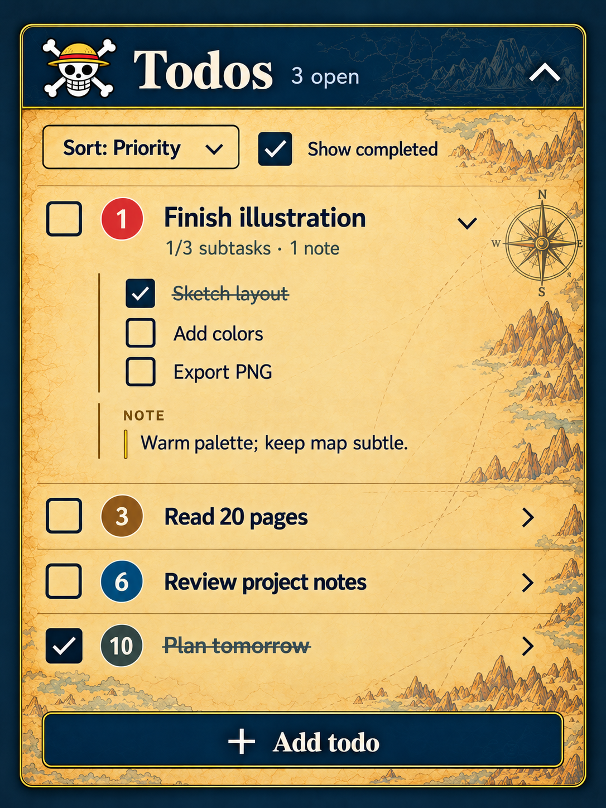
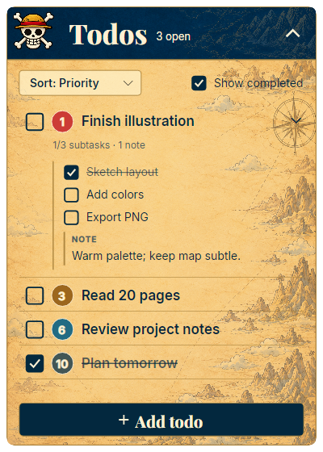
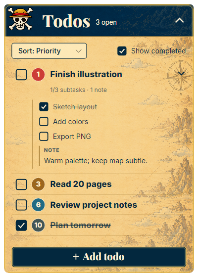
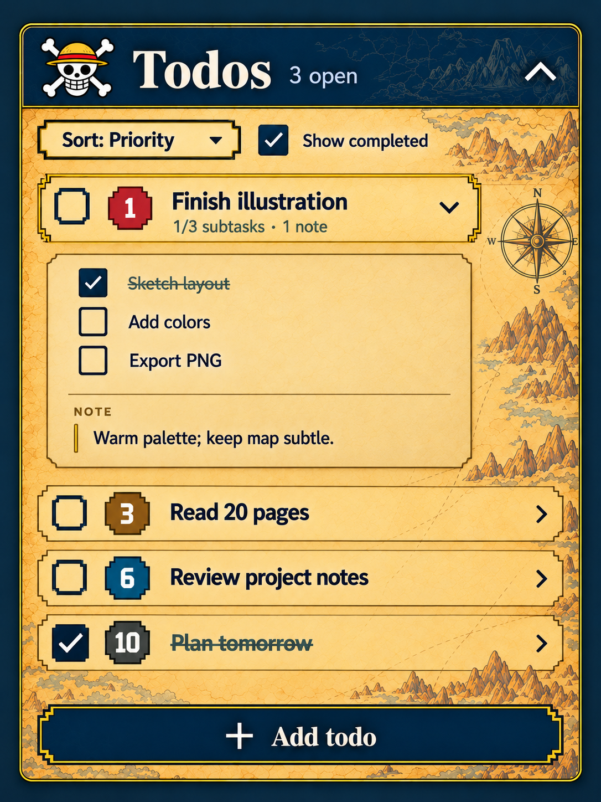
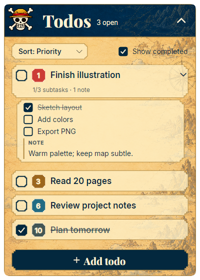
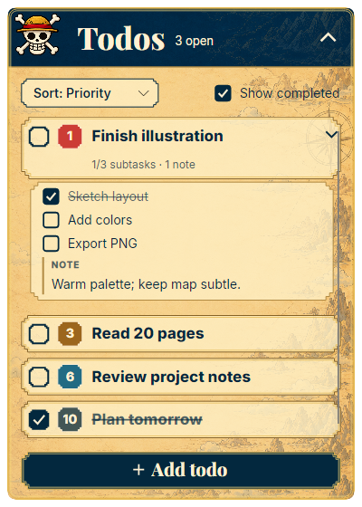
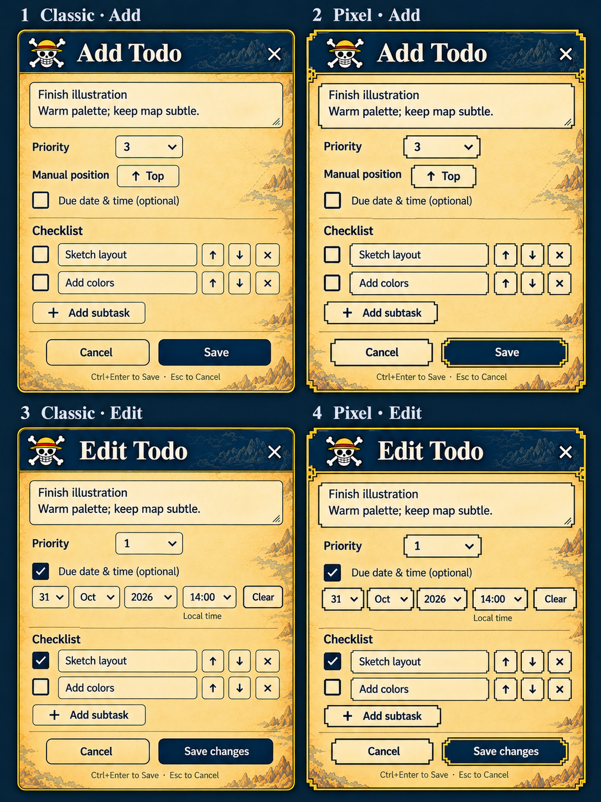
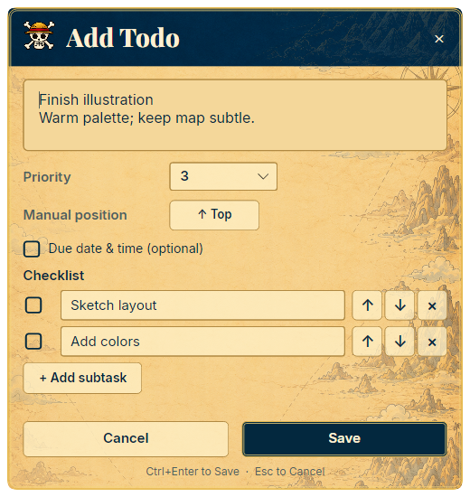
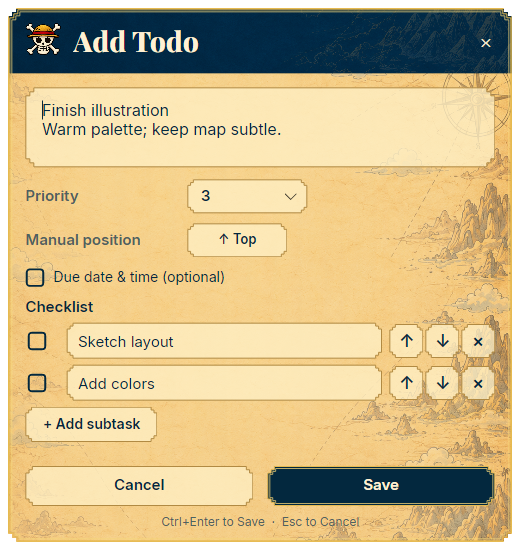

Todo overlay · Reference comparison
Approved artwork beside the previous and refined native renders. The latest version restores the original Luffy emblem, aligns labels, and adds the fine gold outline.
Approved reference
Before
Refined native panel
Approved reference
Before
Refined native panel
Approved editor designs
Classic editor
Pixel editor
Native captures are 400 × 560 for the overlays and 520 × 550 for the editors. Images fit the comparison columns; open an image to inspect its original size. Verification notes